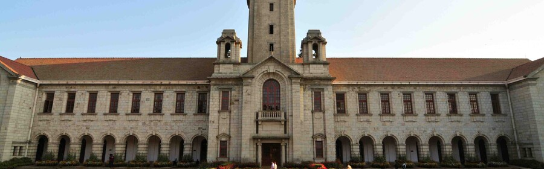

Advanced Education
Authentic milestones from the Indian Institute of Science and the University of Twente.
Doctoral Degree


University of Twente, Netherlands
Ph.D. (2008): Research into Phase separation in complex fluids: A molecular viewpoint. Conducted in the prestigious physics labs of the Netherlands, focusing on statistical mechanics and molecular-scale fluid dynamics.
Postgraduate Degree


Indian Institute of Science (IISc), Bangalore
Masters (Chemical Engg.) (2003): Thesis on Phase inversion in liquid-liquid dispersions. This foundational work in multiphase systems at India's premier research institute provided the analytical base for future industrial CFD applications.


MIT Sloan
Digital Business Strategy (2018): Focused on AI and network-effect dynamics.
ISB Hyderabad
Digital Business Transformation (2019): Specialization in industrial innovation.